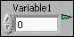

- Right-click the front panel object and select Visible Items�PSP LED from the shortcut menu.
- Use the Data Binding:LED Visible property to hide the indicator programmatically.
When you bind a front panel control or indicator to a shared variable at edit-time, a small transparent indicator appears next to the front panel object. When you run the VI, if the connection to the Shared Variable Engine is successful, the indicator turns green, as shown in the following figure.

If the connection is not successful, the indicator turns red. A status message also appears if you move the cursor over the indicator.
|
Note��You can hide this indicator using the following methods:
|
If you receive errors when attempting to read or write data from the front panel, investigate the following possible causes: